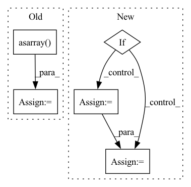

Pattern ID :14929

Before Change
for i in range(x.size(0)):
mask = Masks.get_ff_mask(height, width)
mask_all.append(mask)
mask = torch.from_numpy(np.asarray(mask_all)).unsqueeze(1).float()
ones = torch.ones(x.size(0), 1, x.size(2), x.size(3))
mask = ones * mask
if x.is_cuda:
mask = mask.cuda()
result = x * (1. - mask)
After Change
if config["mask_type"] == "hole":
result = x * (1. - mask)
elif config["mask_type"] == "mosaic":
// TODO: Matching the mosaic patch size and the mask size
mosaic_unit_size = config["mosaic_unit_size"]
downsampled_image = F.interpolate(x, scale_factor=1. / mosaic_unit_size, mode="nearest")
upsampled_image = F.interpolate(downsampled_image, size=(height, width), mode="nearest")
result = upsampled_image * mask + x * (1. - mask)
else:
raise NotImplementedError("Not implemented mask type.")
In pattern: SUPERPATTERN
Frequency: 3
Non-data size: 5
Instances
Fragment ID: 49798711
Project Name: sayednadim/global-and-local-attention-based-free-form-image-inpainting
Commit Name: aaa17ed332dc95db0f5900a43be179e26569b50c
Time: 2020-08-16
Author: smnadimuddin@gmail.com
File Name: model/mask.py
M Class Name: AnonimousClass
N Class Name: AnonimousClass
M Method Name: mask_image(2)
N Method Name: mask_image(2)
M Parent Class:
N Parent Class:
M File Name: model/mask.py
N File Name: model/mask.py
M Start Line: 40
M End Line: 49
N Start Line: 56
N End Line: 72
'>
Before Change
// Add the extracted part and filename to the list
rewards_file = open(folder_path+file_name, "rb")
rewards = pickle.load(rewards_file)
rewards = np.asarray(rewards)
ecdf = ECDF(rewards)
ecdf_dict[float(extracted_part)] = 1 - ecdf(499)
if extracted_part > min_pert_freq:
rewards_file = open(folder_path+file_name, "rb")
After Change
frequencies.extend(extracted_frequencies)
if boxplot:
sorted_rewards_dict = dict(sorted(rewards_dict.items(), key=lambda item: item[0]))
sorted_rewards = list(sorted_rewards_dict.values())
if len(sorted_rewards) == 0:
return
'>
Fragment ID: 49798645
Project Name: jderobot/rl-studio
Commit Name: f0b7c9ec051492927818df1329c2eed1eda6ed1d
Time: 2023-01-20
Author: ruben.lucas.zaragoza@hotmail.com
File Name: rl_studio/agents/utilities/plot_multiple_graphs_frequencies.py
M Class Name: AnonimousClass
N Class Name: AnonimousClass
M Method Name: plot_freq(4)
N Method Name: plot_freq(3)
M Parent Class:
N Parent Class:
M File Name: rl_studio/agents/utilities/plot_multiple_graphs_frequencies.py
N File Name: rl_studio/agents/utilities/plot_multiple_graphs_frequencies.py
M Start Line: 30
M End Line: 67
N Start Line: 22
N End Line: 79
'>
Before Change
self._apply(tmp_label, self.sid.get(key_label, None), key_label).astype(int).tolist()
)
elif key_label == "background" or d["label_names"][key_label] == 0:
label_guidances[key_label] = json.dumps(
np.asarray([[self.default_guidance] * self.connected_regions]).astype(int).tolist()
)
d[self.guidance] = label_guidances
return d
After Change
// Generate guidance base on selected slice
tmp_label = np.copy(d[key])
// Taking one label to create the guidance
if key_label != "background":
tmp_label[tmp_label != float(d["label_names"][key_label])] = 0
else:
tmp_label[tmp_label != float(d["label_names"][key_label])] = 1
tmp_label = 1 - tmp_label
label_guidances[key_label] = json.dumps(
self._apply(tmp_label, self.sid.get(key_label, None), key_label).astype(int).tolist()
)
'>
Fragment ID: 49798650
Project Name: project-monai/monailabel
Commit Name: d406dc00dfce358803e7db6d0322beaecba6dd8a
Time: 2021-11-08
Author: diazandr3s@gmail.com
File Name: monailabel/deepedit/multilabel/transforms.py
M Class Name: AddInitialSeedPointCustomd
N Class Name: AddInitialSeedPointCustomd
M Method Name: __call__(2)
N Method Name: __call__(2)
M Parent Class: MapTransform,Randomizable
N Parent Class: MapTransform,Randomizable
M File Name: monailabel/deepedit/multilabel/transforms.py
N File Name: monailabel/deepedit/multilabel/transforms.py
M Start Line: 432
M End Line: 452
N Start Line: 428
N End Line: 446